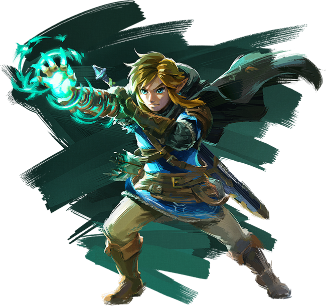
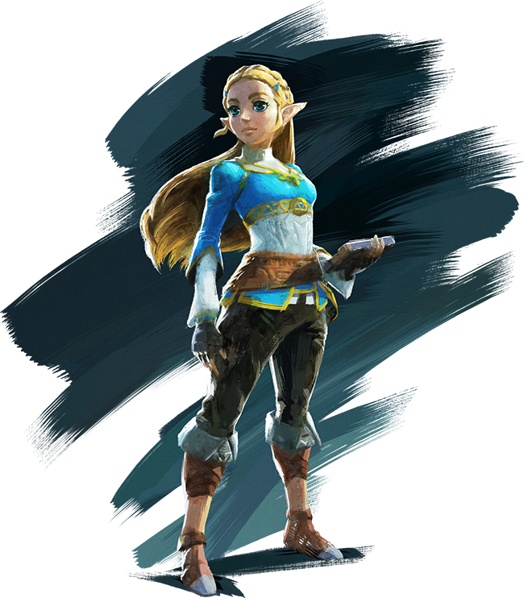

üéÆ Mes jeux vid√©o
← Retour à l'accueilAussi loin que mes souvenirs remontent, ou presque, je me rapelle avoir joué à des jeux vidéo, sous une forme ou une autre. Le tout premier a été Minion Rush, auquel je jouais sur ma tablette vers l'âge de 6 ans. Depuis il y en a eu de nombreux autres, mais voici ceux qui m'ont le plus transporté :
L'univers de Zelda ⚔️
En 2020, j'ai eu la chance d'avoir une Nintendo Switch pour mon anniversaire, et par la m√™me occasion, de d√©couvrir l'univers myst√©rieux de Zelda, √† travers le jeu Breath of the Wild. Depuis, j'ai pass√© un nombre d'heures incalculable aux c√¥t√©s de Link, dans le royaume d'Hyrule ; mes parents pourront en t√©moigner ! üòÇ
Ce qui a très rapidement captivé mon attention dans le jeu, une fois sorti du sanctuaire de la renaissance, ce sont les paysages magnifiques qui ce sont déroulés sous mes yeux. La qualité des graphismes, combinée à la richesse des détails, créent une expérience à la fois réaliste et envoûtante. Je ne m'en lasse pas.
Comme dans tout RPG, le mode de jeu à la première personne et le fil de l'aventure sont très entraînants. À cela s'ajoute la personnalité attachante et bienveillante de Link, qui nous pousse à nous identifier à lui. Pour ma part, j'ai tout de suite voulu franchir les obstacles et traverser les nombreuses épreuves en chemin, afin de sauver la princesse Zelda.
À sa sortie en mai 2023, on m'a offert Tears of the Kingdom, que j'ai trouvé absolument fantastique. Après y avoir joué pendant un mois, je peux dire sans hésiter que c'est mon préféré. Globalement, tout était encore mieux que le jeu précédent, mais ce que j'ai beaucoup aimé, c'est la possibilité nouvelle d'explorer le ciel et les profondeurs de la terre. Cela a ajouté une toute autre dimension à l'univers de Zelda.